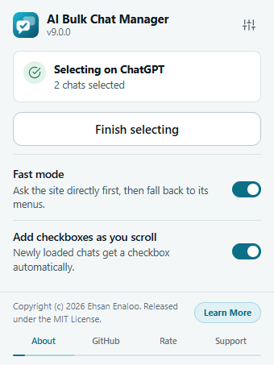
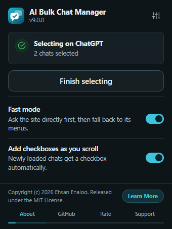

The popup is a small control center. It does not hold the selection tools. Those are in the panel inside the chat page. The popup starts and ends selecting, and holds two quick switches.


The status card#
The card at the top tells you what the extension sees on the current tab.
| The card says | What it means | What to do |
|---|---|---|
| Checking this page… | It is looking at the tab. | Wait a moment. |
| Ready on ChatGPT and Start selecting to put a checkbox next to each chat. | A supported site, not selecting yet. | Click Start selecting chats. |
| Selecting on ChatGPT and 2 chats selected | Selecting is on in this tab. | Click Finish selecting to end it. |
| Can’t reach ChatGPT yet and Reload the page, then try again. | The extension could not attach to this tab. | Click Reload page. |
| This page isn’t supported and Works on ChatGPT, Claude, Gemini and Grok. | You are on some other page. | Click one of the four site buttons shown to open that site in a new tab. Then click the icon again. |
The site name in the card is the real site (ChatGPT, Claude, Gemini or Grok). When you click the main button, the popup closes so it does not get in the way of the page. Under the button, Shortcut: shows the current keyboard shortcut if one is set. See Keyboard and shortcuts.
The header#
The header shows the name and the version, for example v9.0.0. The sliders button (Settings) opens the Options page in a new tab.
The two switches#
- Fast mode
- Ask the site directly first, then fall back to its menus. The same setting as in the Options page. See How the work is done.
- Add checkboxes as you scroll
- Newly loaded chats get a checkbox automatically. The same setting as in the Options page.
Both save at once. Changes also show in the open panel.
The rotating footer#
At the bottom of the popup, a short message and a button rotate through four items. The four tabs under them are About, GitHub, Rate and Support.
| Tab | Message | Button |
|---|---|---|
| About | Copyright (c) 2026 Ehsan Enaloo. Released under the MIT License. | Learn More opens the developer's website, www.enaloo.com. The About section of the Options page also links to it. |
| GitHub | Source code, releases, and project details. | Open GitHub opens the repository. |
| Rate | Enjoying the extension? A good rating helps the extension build trust faster. | Rate on Store opens the review page for your browser’s store. |
| Support | Saving you time? Support the project with a small coffee. | Buy Me a Coffee opens the donation page. |
- The footer moves to the next item every five seconds. A thin line under the tabs shows the time left.
- It pauses while the pointer is over it or a footer control has the keyboard focus.
- Click a tab to show that item and restart the timer.
- If your system asks for reduced motion, the footer stays on the first item and does not rotate.
The buttons open web pages in a new tab only when you click them.
The monthly support note#
The extension is free and has no ads. About two weeks after you install it, and then at most once every 30 days, it does two things:
- A small heart appears on the toolbar icon.
- The next time you open the popup, a note titled Free and ad-free appears. It reads: If this saves you time, a small coffee helps keep it updated. Shown at most once a month.
The note has these choices:
- Buy me a coffee opens the donation page.
- Rate opens the store review page.
- Not now hides the note until the next reminder.
- Don’t show again turns the reminder off for good, including the heart.
Nothing is sent when the note appears. The only thing stored is a small timer on your device. See Privacy and permissions.
Edit this page on GitHub ↗ · Last updated 2026-10-08